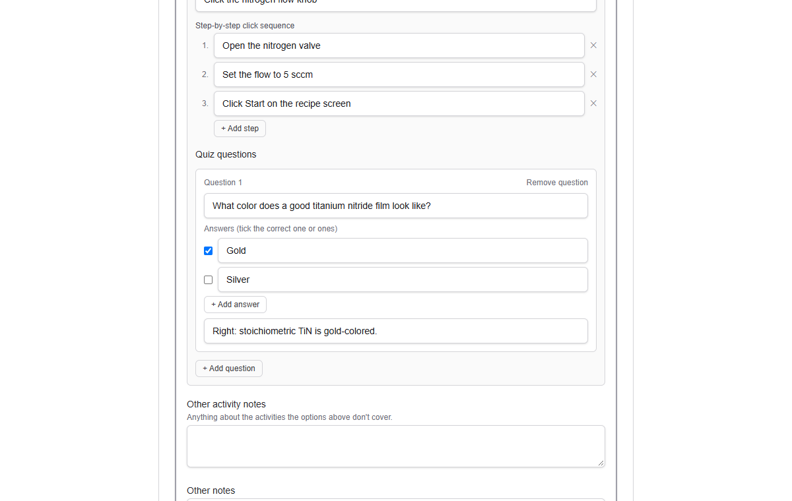
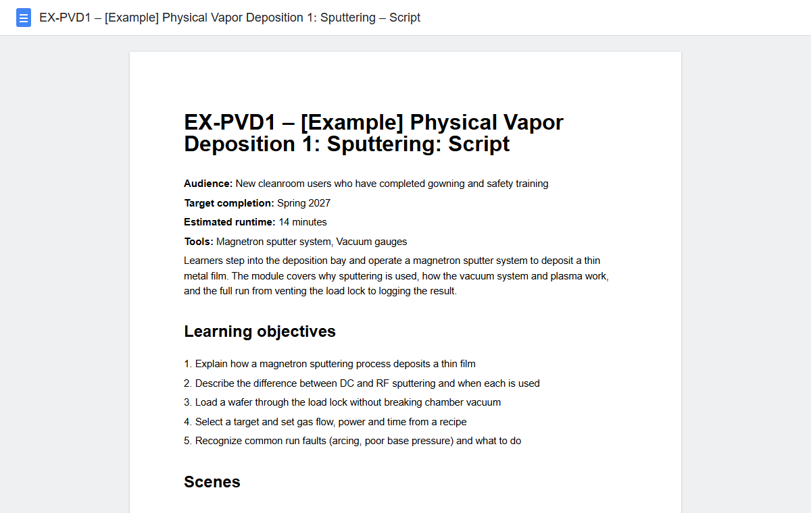
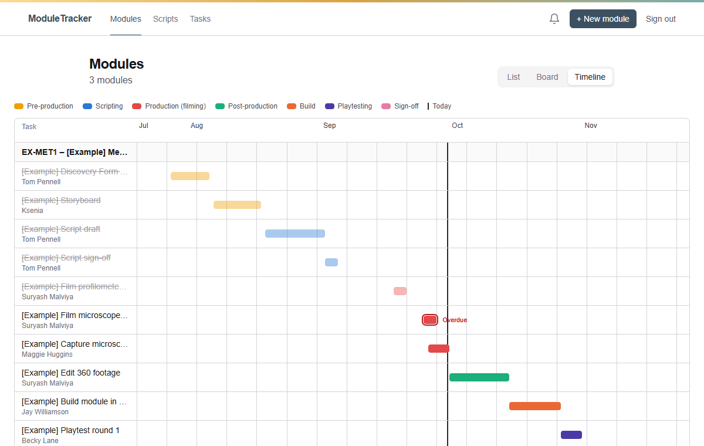

Module creation
Start with what the expert knows
A guided Discovery Form walks through the topic, learning objectives, tools, and each scene: who speaks, what's clicked, and the quiz questions. No blank page.

ModuleTracker replaces the pile of planning docs and spreadsheets with one shared app. Three things make it different:
A guided Discovery Form walks through the topic, learning objectives, tools, and each scene: who speaks, what's clicked, and the quiz questions. No blank page.

One click turns the Discovery Form into a Google Doc laid out scene by scene, saved in a shared team folder, so everyone writes in the same copy.

Every task as a List, a Board you drag cards across, or a Timeline. For one module, or all of them at once.

Undo for every changeAutomatic backupsWorks on your phone
Tap the glowing spot to go to the next step, or press Watch to see it play.